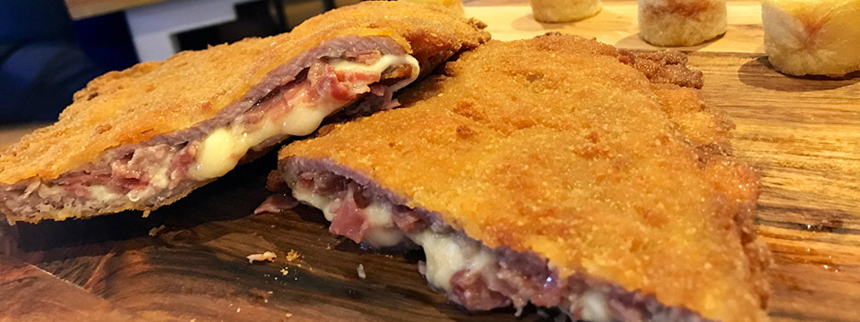

Cachopo de ternera tradicional asturiano
Ingredientes
Para 1 persona:-2 filetes de ternera asturiana (120 g)
-4 lonchas finas de jamón ibérico
-4 lonchas finas de queso
-100 g de harina blanca
-2 huevos camperos grandes
-200 g pan rallado
-Una pizca de sal
-Pimienta negra
-Aceite de girasol (el necesario para freír)
Elaboración
1.-Salpimentamos los dos filetes de ternera con sal y pimienta negra al gusto.2.-Sobre un filete de ternera extendemos dos lonchas de queso. A continuación colocamos las cuatro lonchas de jamón ibérico y ponemos otra capa con dos lonchas de queso. Para terminar colocamos el otro filete de ternera encima.
3.-Presionamos bien en los laterales de los filetes para que no se salga el relleno.
4.-Batimos los huevos, colocamos la harina en un recipiente grande y el pan rallado en otro recipiente grande.
5.-Pasamos los filetes con mucho cuidado por la harina, después por el huevo y finalmente por el pan rallado cubriendo bien nuestro cachopo.
6.-Freímos nuestro cachopo en abundante aceite bien caliente. Cuando este dorado por una parte, le damos la vuelta para que quede bien crujiente por ambos lados.
7.-Al sacarlo de la sartén lo pondremos sobre papel absorbente para escurrirlo bien y evitar que nos quede aceitoso
